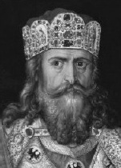

Batı Roma İmparatorluğu’nun 476 yılında çökmesiyle Avrupa, daha sonraları tarihçilerin Karanlık Çağ olarak adlandırdığı bir savaş ve anarşi dönemine girdi. Rakip kavimler, imparatorluğun geride bıraktığı kalıntıları için sürekli olarak savaşıyordu. Sanat ve bilimlerdeki ilerlemeler durdu. Roma tarafından sağlanan birliğin yokluğunda, kıtayı bir arada tutan çok az şey vardı.

Bugünkü Almanya’da kurulmuş bir krallığın lideri olan Şarlman (742-814), bir zamanlar Batı Roma İmparatorluğu’na ait olan toprakların çoğunu yeniden bir araya toplayabilen ilk kişi olarak, sekizinci yüzyılda büyük bir Avrupa imparatorluğu yarattı. 800 yılının Noel gününde Papa ona, tekrar dirilen Hıristiyanlık’ın lideri ve ilk Kutsal Roma İmparatoru olarak taç giydirdi.
Taç giyme töreni zamanında Şarlman’ın imparatorluğu bugünkü Fransa, Belçika, Hollanda, İsviçre’yi ve Almanya’nın büyük kısmını içine alıyordu. Şarlman, Franklar’ın ve komşularının çoğunu hakimiyeti altına alan bir Alman kavminin kralıydı.
800’de ilan edilen Kutsal Roma İmparatorluğu, gerçekte Avrupa’yı hiç birleştirmedi. On sekizinci yüzyılda Voltaire’in alaya aldığı gibi, ne “kutsal”dı ne “Romalı”ydı ne de bir “imparatorluk”tu. Sadece, içlerinden bazıları birkaç kilometrekareden büyük olmayan üç yüzden fazla yarı-bağımsız prensliğin bir aradalığından müteşekkildi. Yine de, gelecek yüzyıllar için Orta Avrupa’daki en büyük güçtü. Şarlman’ın kuvvetleri Hıristiyanlık’ı yaydı ve İspanya’da Müslüman halifenin elinde olan bölgeyi geri alabilmek için (başarısızlıkla) savaştı.
Şarlman’ın mirası, (kelimenin tam anlamıyla)Avrupa genelinde halen görülür. Genetik alanındaki son çalışmalar, Avrupalılar’ın büyük bir kısmının Frank kralından gelme olduğunu göstermektedir. Fransa ve Almanya’nın kurucu babalarından biri olarak dikkate alınır. Küçülmüş haliyle imparatorluğu, son Kutsal Roma İmparatoru’nun 1806’da yönetimden çekilmesine dek sürmüştür.
EK BİLGİLER:
1. Şarlman’ın savaşlarda taşıdığı kılıç, Joyeuse ismindeydi. Bu ünlü kılıç olduğu düşünülen bir silah şu anda Paris’teki Louvre Müzesi’nde bulunmaktadır.
2. Popüler ortaçağ efsanesinde Şarlman, tarihin en önemli şövalyeleri olan “dokuz kıymetliler”den biriydi. Diğer kıymetliler arasında Kral Arthur ve Büyük İskender bulunmaktadır.
3. 778’de İspanya’daki bir savaş sırasında, Şarlman’ın asilzadelerinden biri olan Roland, Basklar tarafından öldürüldü. Roland’ın cesur ölümünün hikâyesi, ortaçağ edebiyatının en ünlü parçalarından biri olan “Roland’ın Şarkısı” için bir temel oldu.